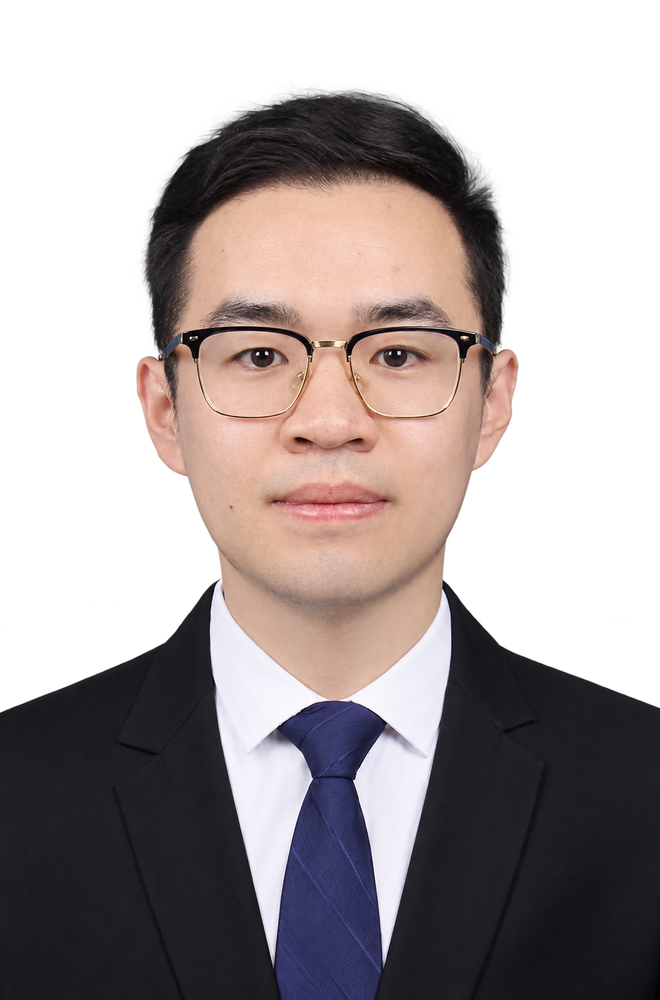

Smart actuation
Dynamic hysteresis, inverse compensation and feedforward control of piezoelectric actuators and voice coil motors.
Researching the modeling and control of smart material systems, with a focus on piezoelectric actuation, nonlinear hysteresis, precision motion and vibration mitigation.

Jiaxi Jin is a postdoctoral researcher at the Suzhou Institute of Biomedical Engineering and Technology, Chinese Academy of Sciences (SIBET), focused on the research and development of opto-mechatronic equipment. His work spans smart actuation, dynamic modeling, vibration control and precision mechatronic systems. The research connects nonlinear system behavior with practical control and compensation methods.
Topics represented in his publications include piezoelectric actuator hysteresis, voice coil motors, hybrid vibration isolation, flexible structures, microgravity simulation and engineering dynamics. The publication list below follows his Google Scholar profile.
An academic path in mechanical engineering and interdisciplinary systems research.
Suzhou Institute of Biomedical Engineering and Technology, Chinese Academy of Sciences (SIBET)
Harbin Institute of Technology
Harbin Institute of Technology
Shandong University of Technology
From nonlinear modeling to experimental systems and adaptive control.
Dynamic hysteresis, inverse compensation and feedforward control of piezoelectric actuators and voice coil motors.
Active, passive and semi-active vibration isolation using smart materials and electromechanical devices.
Flexible structures, parallel mechanisms, microgravity simulation and dynamic analysis of engineering systems.
Grouped by the publication year shown on Google Scholar. Each entry links to its individual Google Scholar record.
X Xing, Z Chen, Y Liu, J Jin · Mechanics of Advanced Materials and Structures 33 (1), 2471957, 2026
X Sun, L Wang, J Jin, Z Liu, Z Chen, Z Li · International Journal of Applied Mechanics 18 (05), 2650023, 2026
X Sun, Y Zhu, J Jin, Z Li, L Wang, Z Chen · Computer Modeling in Engineering & Sciences 147 (1), 18, 2026
X Sun, Z Li, L Wang, J Jin, Z Chen · Nonlinear Dynamics 114 (6), 409, 2026
X Sun, J Jin, Z Chen · Thin-Walled Structures 211, 113092, 2025
J Jin, X Sun, Z Chen · Mechanics of Advanced Materials and Structures 32 (13), 3160-3178, 2025
Y Liu, Q Wang, X Xing, J Jin, Z Chen · Mechanics of Advanced Materials and Structures 32 (23), 5818-5829, 2025
J Jin, X Sun, Z Chen · Journal of Intelligent Material Systems and Structures 36 (4), 223-241, 2025
X Sun, J Jin, Z Chen · Journal of Vibration Engineering & Technologies 13 (1), 37, 2025
J Wang, L Liu, H Liu, X Zhang, Y Bai, J Jin, Z Chen · Results in Engineering 27, 105947, 2025
J Jin, X Sun, Z Chen · Journal of Intelligent Material Systems and Structures 35 (20), 1558-1575, 2024
J Jin, X Sun, Z Chen · Smart Materials and Structures 33 (6), 065045, 2024
J Jin, X Sun, Y Liu, Z Chen · Smart Materials and Structures 33 (9), 095036, 2024
J Jin, X Sun, D Yu, Z Chen · Microgravity Science and Technology 36 (1), 5, 2024
X Sun, J Jin, Z Chen · Journal of the Brazilian Society of Mechanical Sciences and Engineering 46 …, 2024
J Jin, X Sun, Z Chen · Journal of Magnetism and Magnetic Materials 588, 171444, 2023
For the current profile and future updates, visit Jiaxi Jin on Google Scholar ↗.
For academic exchange in smart materials, precision actuation and vibration control.